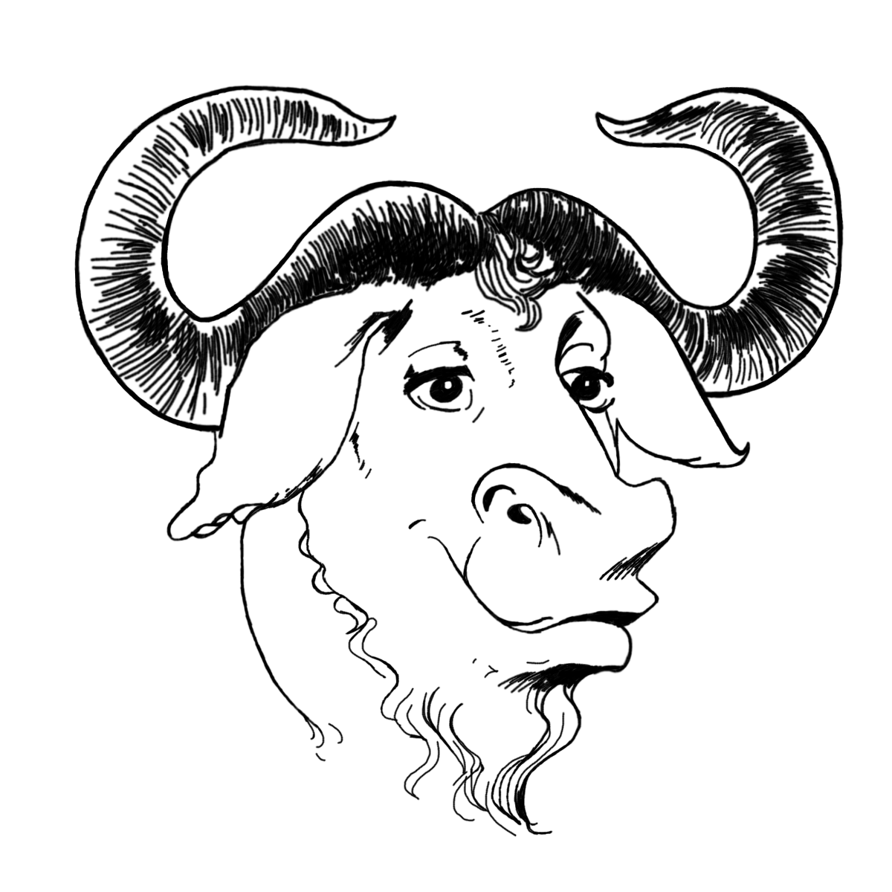

This is LLLichlet's homepage. LLLichlet is working with Rust to develop free software.
“Free software” means software that respects users' freedom and community. Roughly, it means that the users have the freedom to run, copy, distribute, study, change and improve the software. Thus, “free software” is a matter of liberty, not price. To understand the concept, you should think of “free” as in “free speech”, not as in “free beer.” We sometimes call it “libre software,” borrowing the French or Spanish word for “free” as in freedom, to show we do not mean the software is gratis.
You may have paid money to get copies of a free program, or you may have obtained copies at no charge. But regardless of how you got your copies, you always have the freedom to copy and change the software, even to sell copies.
LLLichlet supports the GNU Project and the free software movement.

For an unstyled version see this.